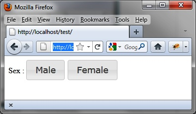
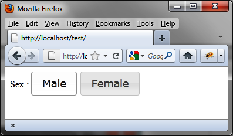
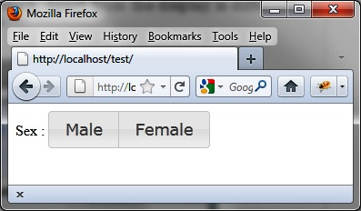

{% include JB/setup %}
{% raw %}
<div>
<div class="book" title="Radio Buttons"><div class="book"><div class="book"><div class="book"><h1 class="title2"><a id="radio_buttons" class="calibre1"></a>Radio Buttons</h1></div></div></div><p class="calibre7">jQuery UI can manage radio buttons so that they have the appearance
    of the buttons above.</p><div class="book" title="Displaying Radio Buttons"><div class="book"><div class="book"><div class="book"><h2 class="title5"><a id="displaying_radio_buttons" class="calibre1"></a>Displaying Radio Buttons</h2></div></div></div><p class="calibre7">The HTML code you write for this is somewhat less flexible than
      the code used so far. We must only use an <code class="literal">&lt;input&gt;</code> element to represent a radio
      button, in which the text associated with the radio button will take the
      form of a <code class="literal">&lt;label&gt;</code> tag.</p><p class="calibre7">For example, to display two radio buttons to choose the sex of a
      person, as shown in Figures <a class="ulink" href="ch05s05.html#radio_buttons_comma_where_neither_is_sel" title="Figure 5-5. Radio buttons, where neither is selected">5-5</a> and <a class="ulink" href="ch05s05.html#radio_buttons_comma_where_male_is_select" title="Figure 5-6. Radio buttons, where Male is selected">5-6</a>, we write the HTML code as
      follows:</p><a id="I_programlisting5_d1e4269" class="firstname"></a><pre class="programlisting">&lt;!DOCTYPE html&gt;
&lt;script src = jquery.js&gt;&lt;/script&gt;
&lt;script src = jqueryui/js/jquery-ui-1.8.16.custom.min.js&gt;&lt;/script&gt;

&lt;link rel=stylesheet type=text/css
      href=jqueryui/css/smoothness/jquery-ui-1.8.16.custom.css /&gt;

<span class="firstname"><strong class="userinput">Sex : &lt;input type=radio name=sex id=m&gt;&lt;label for=m&gt;Male&lt;/label&gt;&lt;/input&gt;</strong></span>
       <span class="firstname"><strong class="userinput">&lt;input type=radio name=sex id=f&gt;&lt;label for=f&gt;Female&lt;/label&gt;&lt;/input&gt;</strong></span>

&lt;script&gt;

$("input").button ();

&lt;/script&gt;</pre><p class="calibre7">Notice the use of the <code class="literal">for</code>
      attribute in the <code class="literal">&lt;label&gt;</code> tag to
      associate the text with the radio button. If you forget to add this
      part, the selection and deselection of the buttons no longer takes
      place.</p><div class="book"><div class="figure"><a id="radio_buttons_comma_where_neither_is_sel" class="firstname"></a><div class="book"><div class="book"><a id="I_mediaobject5_d1e4288" class="firstname"></a></div></div><p class="title4">Figure 5-5. Radio buttons, where neither is selected</p></div></div><div class="book"><div class="figure"><a id="radio_buttons_comma_where_male_is_select" class="firstname"></a><div class="book"><div class="book"><a id="I_mediaobject5_d1e4296" class="firstname"></a></div></div><p class="title4">Figure 5-6. Radio buttons, where Male is selected</p></div></div></div><div class="book" title="Improving the Display with buttonset ()"><div class="book"><div class="book"><div class="book"><h2 class="title5"><a id="improving_the_display_with_buttonset_ope" class="calibre1"></a>Improving the Display with buttonset ()</h2></div></div></div><p class="calibre7">The radio buttons shown in Figures <a class="ulink" href="ch05s05.html#radio_buttons_comma_where_neither_is_sel" title="Figure 5-5. Radio buttons, where neither is selected">5-5</a> and <a class="ulink" href="ch05s05.html#radio_buttons_comma_where_male_is_select" title="Figure 5-6. Radio buttons, where Male is selected">5-6</a>, are certainly more visually pleasing
      than the traditional radio buttons, but it would be better to organize
      them to show that they form a block. We can do this by slightly
      modifying the HTML code with the changes shown in bold:</p><a id="I_programlisting5_d1e4310" class="firstname"></a><pre class="programlisting">&lt;!DOCTYPE html&gt;
&lt;script src = jquery.js&gt;&lt;/script&gt;
&lt;script src = jqueryui/js/jquery-ui-1.8.16.custom.min.js&gt;&lt;/script&gt;

&lt;link rel=stylesheet type=text/css
      href=jqueryui/css/smoothness/jquery-ui-1.8.16.custom.css /&gt;

<span class="firstname"><strong class="userinput">&lt;div&gt;</strong></span>
  <span class="firstname"><strong class="userinput">Sex : &lt;input type=radio name=sex id=m&gt;&lt;label for=m&gt;Male&lt;/label&gt;&lt;/input&gt;</strong></span>
         <span class="firstname"><strong class="userinput">&lt;input type=radio name=sex id=f&gt;&lt;label for=f&gt;Female&lt;/label&gt;&lt;/input&gt;</strong></span>
<span class="firstname"><strong class="userinput">&lt;/div&gt;</strong></span>

&lt;script&gt;

$("input").button ();
<span class="firstname"><strong class="userinput">$("div").buttonset ();</strong></span>

&lt;/script&gt;</pre><p class="calibre7">The difference from the previous code is that we have wrapped
      <code class="literal">&lt;input&gt;</code> elements into a
      <code class="literal">&lt;div&gt;</code>, to which we applied the
      jQuery UI <code class="literal">buttonset ()</code> method to make
      the buttons look like a single block. The display of the buttons is
      different, but the behavior remains the same.</p><p class="calibre7">The result of this script is shown in <a class="ulink" href="ch05s05.html#radio_buttons_now_form_a_single_block" title="Figure 5-7. Radio buttons now form a single block">Figure 5-7</a>.</p><div class="book"><div class="figure"><a id="radio_buttons_now_form_a_single_block" class="firstname"></a><div class="book"><div class="book"><a id="I_mediaobject5_d1e4345" class="firstname"></a></div></div><p class="title4">Figure 5-7. Radio buttons now form a single block</p></div></div></div></div></div>

{% endraw %}

